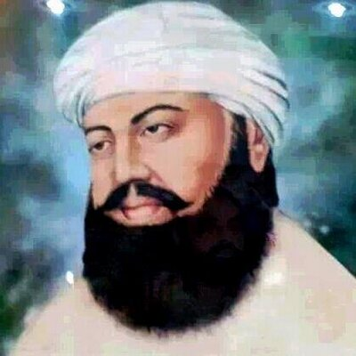
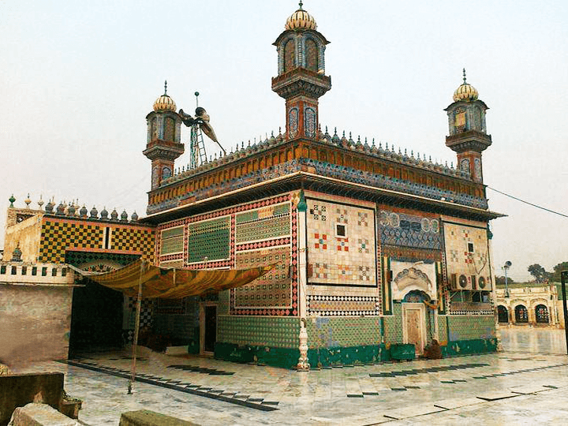
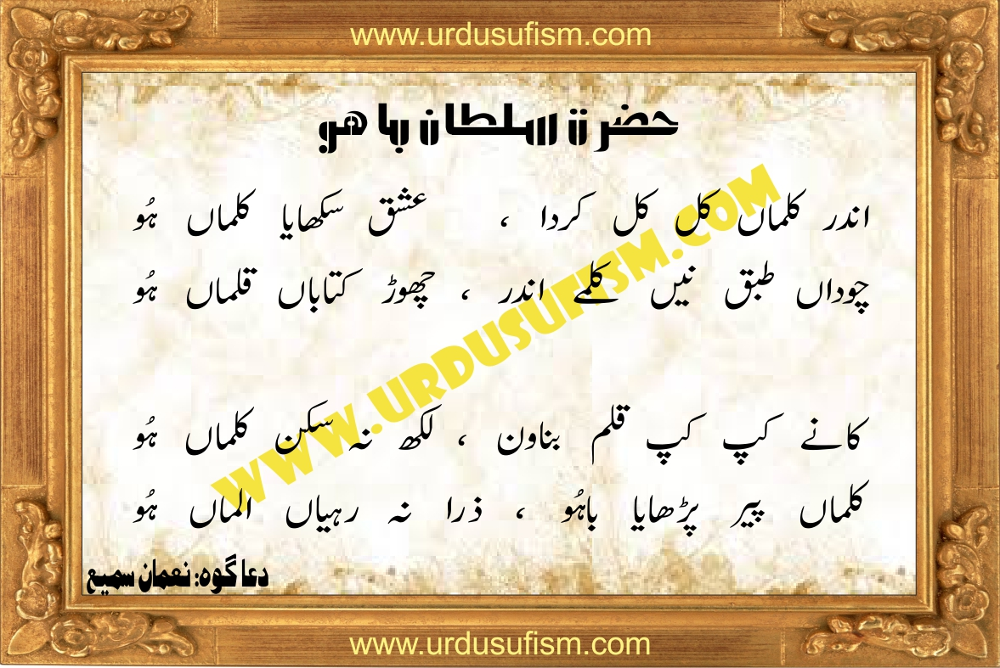

Hazrat Sultan Bahu was born into the Awan tribe known for its organisation and discipline, obedience to the patriarch, valour, education and fear of God. He traced his descent from Hazrat Ali Ra.gif, the son-in-law of the Holy Prophet Mohammad ﷺ.
His father, Bayazeed Mohammed, served emperor Shah Jahan as officer-in-charge of Kohistan. He had committed the Holy Quran to memory and was thus a Hafiz. He was a learned man of his time, and adhered strictly to the tenets enjoined by Islam. His father was very unhappy with the position he held and therefore left Kohistan for Multan. When ordered to return, he tendered his resignation. After spending sometime in Multan, he migrated to Shorkot and settled there permanently. His mother was known for her piety and religious fervour. Hazrat Bahu was born in Shorkot in 1628 AD / 1039 AH and was named Bahu.
Legends relating to his childhood are numerous and of a varied nature. One of them relates that When Bahu was a boy, he was such a devout Muslim that a sort of radiance spread round his face and whenever a Hindu witnessed it, he was so impressed by it, that forgetting all, he renounced his own religion and became a Muslim.

Education
Sultan Bahu's first teacher was his mother, Mai Rasti. She pushed him to seek spiritual guidance from Shah Habib Gilani, whose shrine still remains in the village of Bagdad Shareef[a], near Mian Channu, to this day.
Around 1668, Sultan Bahu moved to Delhi for further training under the guidance of Syed Abdul Rehman Jilani Dehlvi, a notable Sufi saint of the Qadiriyya order, and thereafter returned to Punjab where he spent the rest of his life.
A dream
One night he had a dream in which he saw himself being presented in the Court of the Holy Prophet Mohammad ﷺ by no other
than Hazrat Ali Ra.gif. The Holy Prophet ﷺ took his hand in his and thereby honoured him by initiating him. He himself
acknowledged all those blessings that ensued. He said: "I attained so many and such stations and exalted positions, which
cannot be described." Subsequently, the Holy Prophet ﷺ entrusted him to Hazrat Shaikh Abdul Qadir Jilani, better known as
Ghous-ul-Azam. The dream brought about a noticeable transformation in him. He became indifferent to mundane affairs and
lost interest in his surroundings. He was absorbed in the manifestation of the glory of God Almighty and was lost in the
beauty of the absolute.
Search for a spiritual guide
His mother observing this advised that he get himself initiated in to a Sufi Order. He asked his mother: "Where is a spiritual guide to be found? And where should I go in search of him?" His mother pointed towards the East.
Hazrat Sultan Bahu left home and went out in search of a spiritual guide. He had heard of the great spiritual attainment and powers of Hazrat Shah Habibullah so he went to him and revealed the object of his visit. To this Hazrat Habibullah responded by saying:
“ Know that for a seeker of truth, it is necessary that he should have peace and tranquility. If his attention
is diverted, then success is doubtful.It is therefore better that he should first try to be free himself of the lust
of gold and silver and then set foot on this path. ”
After a short period of discipleship Sultan Bahu rose above his master in his power of karamat or miracles. Thereupon Hazrat Shah Habibullah informed him of his inability to teach him any further and directed him to go to his master Hazrat Shaikh Syed Abdur Rahman Qadiri of Delhi. Hazrat Shaikh Syed Abdur Rahman, as Hazrat Shah Habibullah described him, possessed great spiritual knowledge.
He thereupon went to Delhi and became a spiritual disciple of Hazrat Shaikh Syed AbdurRahman Qadiri, and later, his spiritual guide conferred upon him the robe of caliph, thus enabling him to accept spiritual disciples. After living in Delhi for sometime, he returned to Shorkot and began to preach. He called his Order "Qadiriya Masrooriya." Among his caliphs were Hazrat Nou Rang, Hazrat Mulla Ma'ani, and Hazrat Momin Shah.

Miracles
ایک دن ایک خاص شخص اس کے پاس کچھ پیسے مانگنے آیا۔ اس وقت وہ اپنی زمین ہل چلا رہا تھا۔ یہ آدمی اسے یہ کرتے دیکھ کر واپس جانا چاہتا تھا۔ جیسے ہی حضرت باہو نے انھیں دیکھا ، آپ نے انہیں بلایا اور فرمایا: "تم اتنی دور سے آئے ہو ، یہ کیسے ہے کہ تم مجھ سے ملے بغیر وہاں سے چلے جارہے ہو؟" اس نے فرد کو پیشاب کرنے کے دوران اس شخص سے زمین منتقل کرنے کو کہا۔ جب وہ لوٹ کر آیا تو اس نے تمام کنکروں کو زمین پر پھینک دیا اور حیرت کی بات یہ ہے کہ وہ سونے میں بدل گئے۔ اس شخص کو مخاطب کرتے ہوئے اس نے کہا: "تم پیسے کے لئے آئے ہو۔ میں تمہیں مایوس نہیں کرنا چاہتا تھا۔ اب ، جتنا سونا چاہے لے آؤ۔" اس شخص نے بڑی مقدار میں سونا اٹھایا اور ایک انتہائی خوش آدمی کو لوٹ لیا۔
Marriage and children
He had four wives who bore him eight sons. His youngest son, Sultan Hayat Mohammed, died in childhood. His seven other sons were: Sultan Noor Mohammed, Sultan Wali Mohammed, Sultan Latif Mohammed, Sultan Saleh Mohammed, Sultan Ishaq Mohammed, Sultan Fath Mohammed and Sultan Sharif Mohammed.
Character and literary pursuits
He was ever absorbed in meditation and was indifferent to mundane affairs. He is the author of many books including Ain-ul-Faqr, Gang-ul-Israr, Kalid- ut-Tauhid, Noor-id-Huda, Mahabat-ul-lsrar, Shams-ul-Arefeen, Aurange Sliahi, Israre Qadiri, Taufiq-e-Hidajat, Majalistun-Nabi, Tegli-e-Berehna, Risala Ralii, Qurb-e-Didar, Kalid-e-Jannat, Miftah-ul-Ashiqeen, Kashf-ul-Israr, Amir-ul-Kaunain, Jam-e-Israr, Ain-un-Nijat, Qutb-ul-Aqtab, and Hujjat-ul-Israr.

Teachings
His teachings serve as a code for life, useful to all. He writes:
“ Woe to those persons who are content to live in darkness.' God Almighty says: 'O ye people! come towards God.' But, what to say of coming towards God, they run to avoid this. They take themselves to be enlightened even though the ray of enlightenment may not have fallen upon them. But, in fact,
they are far from truth and are for ever proud of their so-called spiritual attainments. ”
About faqr (poverty), he says: "It has three meanings, the first meaning is the extinction of self, the second meaning is wrath on self, and the third meaning is submission to the divine will."
Shrine
The shrine of Sultan Bahu is located in Garh Maharaja, Punjab.[6] It was originally built on Bahu's gravesite until the Chenab River changed its course causing the need to relocate twice and as witnessed by those present at the time of relocation, claimed that his body was, in fact, still intact at the time.[6] It is a popular Sufi shrine, and the annual Urs festival commemorating his death is celebrated there with great fervor on the first Thursday of Jumada al-Thani month.[citation needed] People come from far off places to join the celebrations.[7]
Sultan Bahu also used to hold an annual Urs to commemorate the martyrs of Karbala from the 1st to the 10th day of the month of Muharram.[citation needed] This tradition continues to this day and every year, thousands of pilgrims visit the shrine during the first 10 days of Muharram.